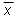

Whether, in a case like this, you obtain an uncertainty of 0.02 m by "eye-balling" or an uncertainty of 0.018 m by calculating the standard deviation, in both cases the uncertainty would be denoted DL, if the quantity to be measured is denoted by the symbol L. Thus, you need to make it clear in the context what DL denotes, i.e., how DL was determined. Compare the section "Notation" on Page 1 of this session.
Suppose the tape measure that was used to measure the lengths in the tabulation above had the first 10 cm missing, without this being noticed. This would make all measured values and their mean 10 cm too large. This kind of an error is called a systematic error. If a sizeable systematic error is present, the measurements would be correspondingly inaccurate even though fairly precise.
 n.
n.
In the example above, the SD of the sample mean,
smean, would be equal to s /n = 0.018 /5 = 0.008 m.
smean = 0.008 m .
If there is no systematic error present, the five measurement values thus provide the following final result for the length:
1.184 m ± 0.008 m
where the true mean  has a roughly 68% chance of being in the indicated range.
In quoting an uncertainty, make sure you indicate what the uncertainty means, whether it is the uncertainty in the individual measurement values or in the mean of these values. There is no generally accepted convention that dictates which uncertainty to use so that the reader of your publication needs to be informed.
n of the SD of the sample mean decreases as the
sample size n increases and would eventually approach zero as
n approaches infinity.
Can one make a measurement result arbitrarily accurate by going to larger and larger samples, at least in principle? Of course, there are practical limits to how often one can repeat a measurement.
No, one cannot. E.g., one cannot go significantly farther in reducing the uncertainty than we have done here, simply by measuring more often. The final result quoted above already goes one decimal beyond the precision with which the individual measurement values are quoted. Going two decimals beyond this precision by increasing n would give a misleading impression of the accuracy of the result. The reason is that there is no assurance that there will not be a systematic error of the order of at least a few tenths of a centimeter inherent in the measuring procedure if the procedure can provide length values only to within 1 cm.